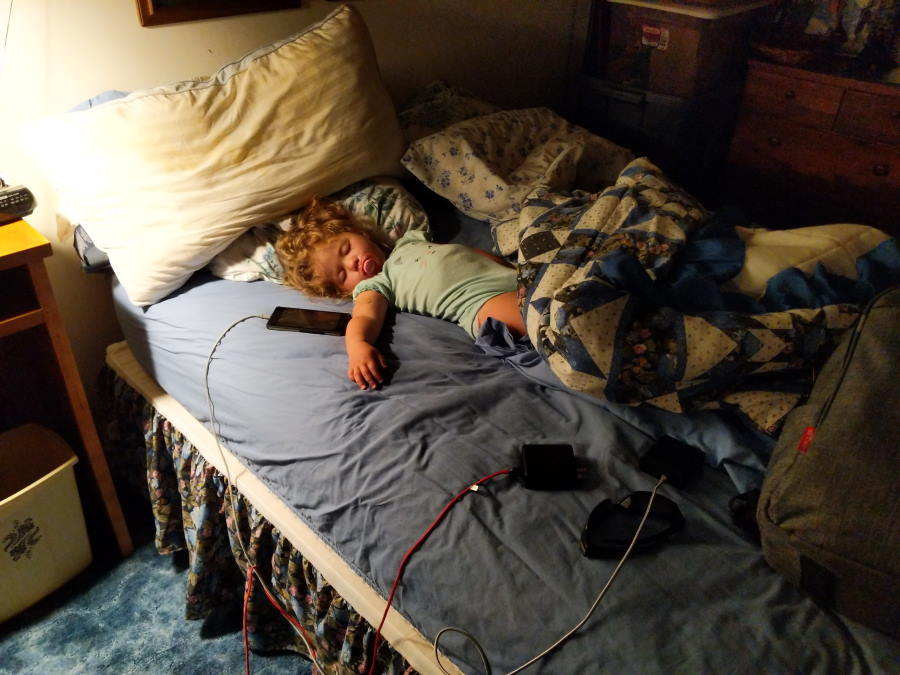
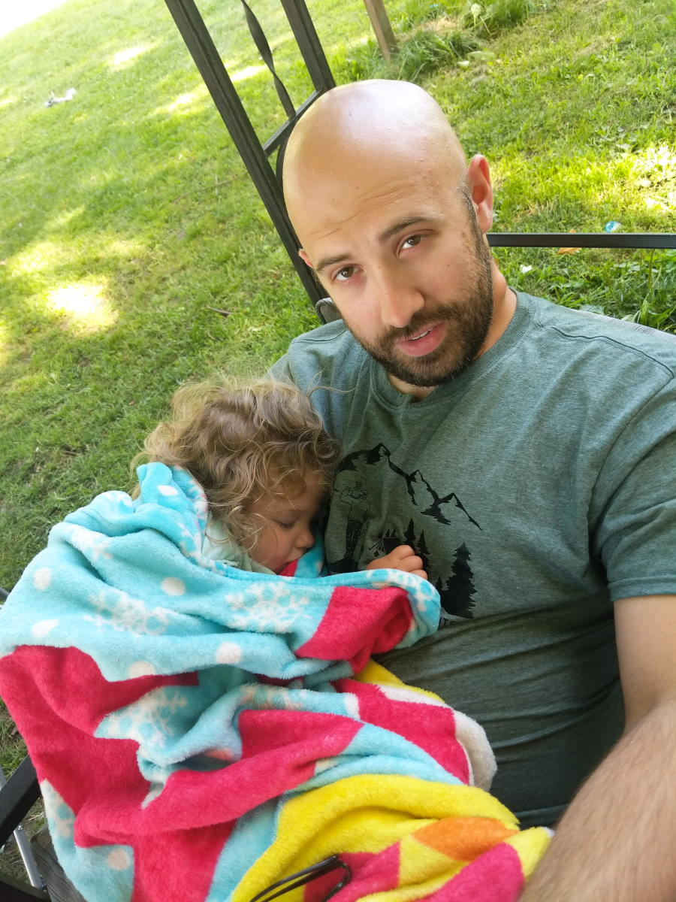

Early morning
It was rough waking up at 4am. Our boddies had grown used to both the bed. It didn't rock back and forth when you moved, and it was more comfy then the tent. But we wanted to get to Iowa this morning to see Abigail's grandaparents, aunt, cousin, and maybe the in-laws.
When we got up Bonnie and Betsy had already been up for awhile. Sounds like Betsy gets up fairly early to take care of the farm, and Bonnie woke up to make us breakfast and coffee. They really are super nice people!
Breakfast today was some home-made Breakfast burritos with green Salsa on top. Bonnie also made a pot of coffee, and made it stronger then normal. She admitted the other day that us east-coast people like strong coffee. Bonnie packed us some donuts, gold fish, and a pop-tart for the girls once they woke up.
Very Yum!  Thea Sleeping in the bed Jenna sound asleep on the couch
Jenna sound asleep on the couch
Road to Iowa
We learned our lesson last time, before I left I filled my Water bottle up with hot coffee which kept me Peppy for the road. We took a bathroom break after 2 hours, about 1/2 to our destination. We both stocked up on Coffee and we tried some donuts from the local Casey's.
Abigail's Coffee and the donuts we sharedThe rest of the trip to Iowa was pretty uneventful, we saw lots of corn. And I feel like that is an understatement for how much corn there is out here. Most of this corn isn't even for human consumption! I never want to see corn again.
Anothing thing about Iowa is they are very energy efficient. There were lots of wind turbines, and all of the gas stations had flex fuel. I even put flex fuel in the Jeep once by accident. I knew there were areas with different octanes, but wasn't really aware of what Flex fuel was. I ended up putting a couple gallons of E-15 in the Jeep. Besides some poor MPG it didn't seem to affect anything.
Old Wind Turbines Too many options!Staying at the Cousin's
Our desintation today was the house of Wes , Abigai's cousin. Jenna was excited to meet him since he worked on "Wind Mills". They had a son, Jackson, who was turning 3 today! Once we got to their house the kids instantly wanted to play with his toys. The water table and trampoline were an instant favorite.
Joslynn playing with the Pike Girls Trampoline fun!It was pretty buggy and getting warm so we tried to take the kids down to the Pool. There was no kiddie Pool and neither Jenna or Thea wanted to be held in the water or wear a swim vest. The water felt nice, and Grandpa Cobb got to enjoy some sun as he watched over his great-grandkids splash in the water.
Wes Cobb watching the kids playSoon we were playing on the playground, the 15 foot slide was an instant favorite. All of the kids wanted to climb up and slide down.
Thea's turn on the slide One of Jenna's many trips down the slideBy this time everyone was getting cranky, so we headed back to the house. I pulled the Jeep onto the lawn and setup the roof top tent. Once we got back to the House the tornado siren went off! Apparently they test it three times a day, talk about a surprise for me!
 Demoing the Roof Top Tent
Demoing the Roof Top Tent
 Talking about the cargo shelf and getting tips to help with the bouncing
Talking about the cargo shelf and getting tips to help with the bouncing
By this time Thea was ready for a nap, so we cuddled while I was eaten alive by the black flies. I had Thea wrapped up in a blanket so she wouldn't get eaten alive.
 Thea BurritoDinner & Bedtime
Cousin Wes ordered some Pizza which was very appreciated. Abigail enjoyed the Taco salad Pizza, so much that she intents to try and make it at home.
Abigail may of eaten most of this pizzaAnother hit was the battery powered tractor that Jackson had. Both kids were fighting over who got to drive it, eventually the tractor was put away and they moved onto playing with other toys.
Trying to teach Jenna to driveIt wouldn't be a family party if we didn't setup for some group family pictures.
The Pike Family Jackson, Wes, Josolynn All of the family membersWe quickly made a few s'mores for the kids and then moved inside to avoid the black fly swarm.
Making s'mores over the Pocket RocketOnce we were inside the adults sat at the dining room table to talk, while the kids relaxed on the couch watching some TV.
Relaxing while watching TVWe were all exhausted, so we didn't stay up very long. Pretty soon we were in the tent, trying to get some sleep. Tomorrow we were going to start the Journey back home.